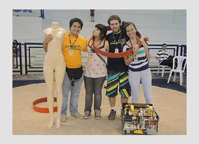
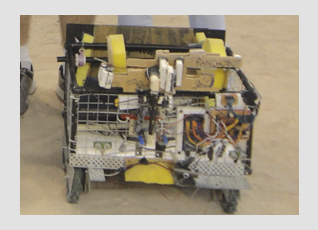

LARC 2012

El XI IEEE Concurso Latinoamericano de Robótica para Estudiantes fue realizado en la Universidad de Fortaleza, ubicada en Fortaleza, Brasil, en el mes de octubre del año 2012. El GIA asistió a esta competencia con equipos en las categorías Open y SEK.

La categoría Open consistía en un robot autónomo cuya tarea era buscar basura(latas) en una playa, recogerla y llevarla a un depósito, además de esquivar obstáculos propios de una playa, como personas, sillas y sombrillas.

La categoría SEK consiste en robots elaborados con kits LEGO©. Para este año la tarea fue construir robots autónomos
que debían intentar recolectar y lanzar la mayor cantidad de pelotas de ping pong naranjas al lado de la cancha donde se ubicaba
el equipo contrario. Además, debían intentar mantener en su propia cancha las pelotas azules, de esta forma se sumaban puntos.